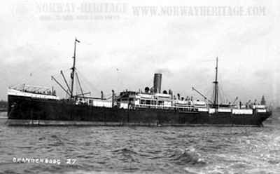

Johann Lorch
19 April 1862 – 28 June 1911
Quick Facts
Immediate Family
Parents
Andrew Lorch DOCUMENTEDCatherine Matchow DOCUMENTED
Named as his parents on his death certificate. The ship-list data gives the same parents as Andreas Lorch and Katharina Metschang — Matchow, Metschang, and Metsang are spellings of one surname, never two families. Andrew and Catherine married at Varjas on 5 February 1839, and the register names their fathers Petrus Lorch and Jacobus Metsang; neither grandfather has a profile on the tree sites.
Spouse
Theresa Novak (1863–1937), married before emigrationTheresa is the only spouse shown for Johann on Geni, and no other marriage is known for him.
Children
Anna Lorch (born 7 April 1888, Perjamosch; emigrated to Cincinnati in 1906 to join her father; married a Rennich, per her mother's 1937 obituary) SUPPORTEDMargaret Lorch (born 29 June 1893; emigrated with her mother in 1907; married Peter Palmer in Cincinnati) DOCUMENTED
The research folder names these two children. The Perjamosch family book, which would list the full family, has not been pulled — so this is the folder's roster, not a claim that there were only two.
Siblings
Péter Lorch (shown as Johann's brother on Geni; no profile identifier was filed for him, so he is unlinked here)No siblings are named in the couple's research folder; Geni shows this one brother.
On Family Tree Sites
Life Timeline
5 February 1839
His parents Andrew Lorch and Catherine Matchow married, Varjas DOCUMENTED (marriage register, naming their fathers Petrus Lorch and Jacobus Metsang)
19 April 1862 · age 0
Born, Perjamosch, Banat SUPPORTED (death record and declaration of intention; the ship-list data gives 18 April)
About 9 April 1906 · age 43
Reached Baltimore from Bremen aboard the Brandenburg DOCUMENTED (his own sworn declaration of intention)
23 August 1906 · age 44
Declaration of Intention sworn, Hamilton County, residence 1047 Wade Street, Cincinnati DOCUMENTED
1906 · age 44
Daughter Anna emigrated to Cincinnati to join him SUPPORTED
24 August 1907 · age 45
Wife Theresa and daughter Margaret reached Baltimore aboard the Main DOCUMENTED (passenger manifest, List 61)
28 June 1911 · age 49
Died, 1047 Wade Street, Cincinnati DOCUMENTED (Ohio death certificate, file 32872)
29 June 1911
Buried, St. Joseph (Old) Cemetery, Cincinnati SUPPORTED (burial date per the filed notes)
Life Story
Johann Lorch was born on 19 April 1862 in Perjamosch, a Banat village in what is now Romania, the son of Andrew Lorch and Catherine Matchow. He became a carpenter. His declaration of intention gives his birthplace village as "Carjamas," a name that has never been identified — the Perjamosch identification comes from the ship-list and family-book data, not from the declaration itself.
In 1906 he sailed alone from Bremen aboard the Brandenburg and reached Baltimore about 9 April, then settled in Cincinnati at 1047 Wade Street, where he swore his declaration of intention on 23 August 1906. His elder daughter Anna followed him to Cincinnati that same year. His wife Theresa and younger daughter Margaret followed a year later, reaching Baltimore aboard the Main on 24 August 1907. Johann never saw them settled for long: he died at 1047 Wade Street on 28 June 1911, aged 49, and was buried the next day in St. Joseph (Old) Cemetery, Cincinnati.
No photograph of Johann has been found, and no Find a Grave memorial exists for him — a search of Saint Joseph Cemetery for the surname Lorch returns only his wife Theresa's memorial. His ship, the Brandenburg, is pictured below from a period postcard.
Gallery

Sources and Evidence
- Ohio death certificate, file 32872: Johann Lorch, died 28 June 1911, 1047 Wade Street, Cincinnati; parents Andrew Lorch and Catherine Matchow; occupation carpenter; buried St. Joseph (Old) Cemetery DOCUMENTED
- Declaration of Intention, Hamilton County, sworn 23 August 1906, residence 1047 Wade Street, Cincinnati: sailed from Bremen aboard the Brandenburg, reached Baltimore about 9 April 1906 DOCUMENTED
- Varjas marriage register, 5 February 1839: Andrew Lorch × Catherine Matchow, naming their fathers Petrus Lorch and Jacobus Metsang; filed in the parents' folder DOCUMENTED
- Dreyer Banat Ship List, Perjamosch section (family-book data): Johann Lorch, born 18 April 1862, son of Andreas Lorch and Katharina Metschang, married to Theresia Novak — the 18 April date and the Andreas/Katharina name forms are the ship-list variants of the death-record facts SUPPORTED
- Geni profiles, click-verified 4 November 2026: John Lorch, born 19 April 1862, Hungary, died 28 June 1911, Cincinnati; son of Andrew Lorch and Catherine Matchow; husband of Theresa Lorch; father of Anna Lorch and Margaret Lorch; brother of Péter Lorch SUPPORTED
- Find a Grave searches, 4 November 2026: no memorial found for Johann or John Lorch (died 1911, Cincinnati); a search of Saint Joseph Cemetery for the surname Lorch returned only Theresa's memorial SUPPORTED
Research Notes and Open Questions
- Grades on this page: DOCUMENTED means an original record was read (death certificate, declaration, marriage register); SUPPORTED means a claim attested by filed research but not by an original record read here (his birth date, his daughter Anna's emigration year, his burial date, the Geni and Find a Grave checks).
- Birth: 19 April 1862 comes from his death record and his declaration; the ship-list data gives 18 April. The profile carries 19 April; the one-day conflict is open.
- Birthplace: his declaration gives the village as "Carjamas," unidentified (Katymár has been ruled out). The Perjamosch identification comes from the ship-list and family-book data.
- Declaration number: two filed notes give it as 1871 and 1874. The page carries no number until the declaration image is read.
- Manifest match: the Baltimore passenger-list index entry "Janos Larch," age 40, is the candidate match for Johann's 1906 arrival — about four years younger than Johann was — and the manifest itself has not been viewed. The Brandenburg identification rests on his own sworn declaration, not on that index entry.
- Parents' names: Matchow, Metschang, and Metsang are spellings of one surname. Andrew and Catherine's fathers, Petrus Lorch and Jacobus Metsang, are named in the 1839 Varjas register but have no profiles on the tree sites.
- Brother: Geni shows one brother, Péter Lorch. No profile identifier was filed for Péter, so he is unlinked here, and no siblings are named in the research folder.
- Find a Grave: no memorial for Johann was found in searches on 4 November 2026, including a cemetery-wide search of Saint Joseph Cemetery. His wife Theresa's memorial is the only Lorch memorial there.
- MyHeritage: Johann is not in the MyHeritage tree (verified in the September 2026 wave), so no MyHeritage tile is shown here.
- Books: Anton Krämer's Perjamosch family book (2000; sold on CD) has not been pulled, and it is the standing source that would list Johann's full family. It is a paid source, noted here only.
- Photographs: no photograph of Johann has been found. The gallery holds the Brandenburg postcard only.
- The shared edit box carried on earlier generation pages is not shown here: no shared document for this generation has been confirmed. Corrections can go in the couple folder.
Profile history: Created 4 November 2026 from the family couple profile and research notes.